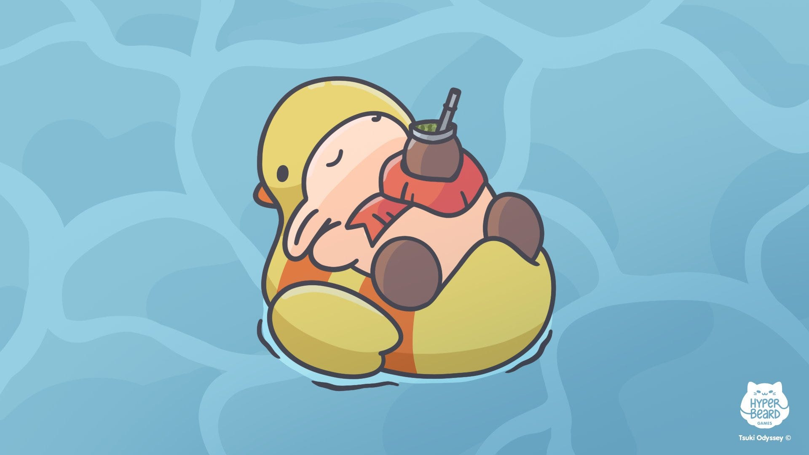
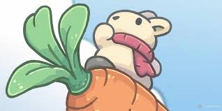

insercción de imagen
Tsuki Odyssey es un encantador juego de simulación y aventuras que sigue las relajantes y tranquilas experiencias de Tsuki, un pequeño conejo que explora un mundo lleno de hermosos paisajes y personajes entrañables. El jugador asume el papel de Tsuki, quien regresa a su pueblo natal, donde puede disfrutar de diversas actividades como pescar, cultivar, interactuar con sus amigos animales y decorar su hogar. El juego se centra en la tranquilidad y la exploración, ofreciendo un ritmo relajado que permite disfrutar de los detalles visuales y sonoros. Es ideal para quienes buscan una experiencia reconfortante y libre de estrés.

Imagen flotante
 La historia se desarrolla a través de los ojos de Tsuki, quien busca reconectar con la simplicidad de la vida en el campo. Mushroom Village y sus alrededores están llenos de personajes únicos y entrañables, como el amistoso oso montañero Yori, la inquieta y curiosa Shika la cierva, y la sabia grulla Tsukino. Estos personajes no solo le ofrecen compañía y conversación a Tsuki, sino que también proporcionan misiones y eventos especiales que ayudan a enriquecer la experiencia de juego y a revelar detalles sobre sus propias historias y vínculos con Tsuki.
 El mundo en Tsuki Odyssey está diseñado para invitar al jugador a la exploración. Tsuki puede descubrir diferentes áreas, como el campo de arroz, el río donde pesca, la tienda de té y el bosque encantado. Cada lugar no solo tiene elementos visuales distintivos, sino también actividades que le permiten al jugador interactuar con el entorno. Además, hay eventos estacionales y festivales que se celebran en el pueblo, como la Fiesta de las Linternas y la Celebración de la Cosecha, que no solo embellecen el paisaje, sino que también fomentan la interacción y la comunidad entre los personajes.
A medida que el jugador avanza en la historia de Tsuki, puede ver cómo este pequeño conejo va redescubriendo la felicidad en las cosas simples, como disfrutar de un paseo bajo las estrellas, recoger zanahorias frescas de su jardín o simplemente compartir una taza de té con amigos. El enfoque del juego no está en completar misiones o alcanzar metas específicas, sino en sumergirse en el ambiente y disfrutar de la vida pacífica y sin presiones que Mushroom Village ofrece. Los detalles visuales, como los cambios de luz y las transiciones de clima, enriquecen la experiencia, haciendo que cada momento se sienta único.
La narrativa de Tsuki Odyssey también toca temas como la importancia de las amistades, el valor de la simplicidad y la necesidad de reconectar con uno mismo en un mundo que a menudo está lleno de distracciones y preocupaciones. El jugador puede ver cómo Tsuki se adapta a este nuevo ritmo de vida y encuentra alegría en pequeños momentos cotidianos. Además, las cartas que Tsuki recibe de sus antiguos compañeros de trabajo y amigos de la ciudad ofrecen una visión de la vida que dejó atrás, contrastando con la serenidad y belleza de su vida en el campo.
En resumen, Tsuki Odyssey es más que un simple juego de simulación; es una experiencia que invita al jugador a reflexionar sobre la importancia de encontrar equilibrio y paz en la vida diaria, y a disfrutar de las pequeñas cosas que a menudo pasan desapercibidas. Es un juego que celebra la simplicidad y la conexión, ofreciendo un espacio seguro y calmado donde el jugador puede desconectar de las presiones del mundo real y sumergirse en un entorno lleno de belleza, encanto y amistad.
Imagen animada
Snowball es uno de los personajes principales en La vida secreta de tus mascotas. Es un conejito blanco que, a primera vista, parece dulce e inofensivo, pero en realidad es un líder feroz y valiente. Anteriormente, Snowball fue una mascota abandonada que, tras ser dejado en la calle, se convirtió en el líder de una banda llamada "Los Descarriados", un grupo de animales que, como él, fueron abandonados por sus dueños. Este grupo, compuesto por varios animales callejeros, está decidido a vengarse de los humanos por haberlos rechazado. Con un carácter enérgico, carismático y un poco loco, Snowball lidera a su equipo con un espíritu combativo, dispuesto a hacer lo que sea necesario para proteger a los suyos y luchar contra lo que percibe como injusticia. Sin embargo, a lo largo de la película, Snowball muestra un lado más tierno y vulnerable. Cuando se encuentra con otros personajes, como Max y Duke, su actitud cambia y eventualmente se da cuenta de que no todos los humanos son malos. A medida que avanza la historia, Snowball pasa de ser un personaje vengativo a uno más comprensivo y dispuesto a formar nuevas amistades..
imagen de fondo
Además de Tsuki Odyssey, otro juego popular de la serie es Tsuki Adventure. Este fue el primer juego que presentó a Tsuki y su relajante mundo. En Tsuki Adventure, los jugadores también siguen la vida del pequeño conejo después de heredar una granja de zanahorias en Mushroom Village. Este juego se centra en explorar la vida tranquila del campo, conocer personajes y participar en actividades relajantes como pescar, cultivar y beber té en la tienda local.
A lo largo de Tsuki Adventure, el jugador descubre un poco más sobre la historia de Tsuki y los otros habitantes del pueblo a través de pequeños eventos y actividades diarias. Es un juego diseñado para ser una experiencia relajante y casual, en el que el progreso ocurre lentamente y se disfruta sin prisas, similar a Tsuki Odyssey, pero con un enfoque más inicial en descubrir el mundo y sus habitantes.
Estos juegos están diseñados para ofrecer una experiencia reconfortante y sin estrés, centrándose en la belleza de lo cotidiano y en la simplicidad de la vida rural.
Filtros de imagen